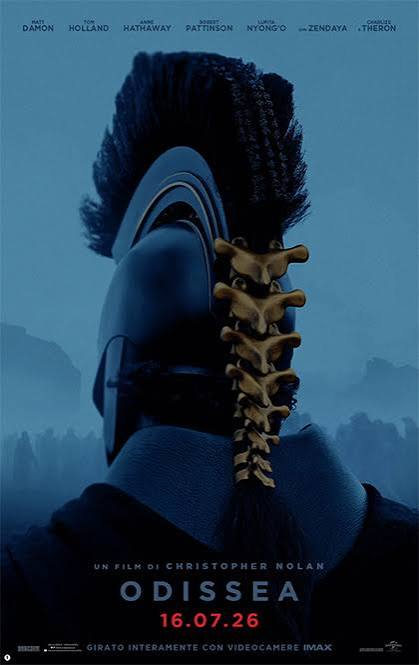

I nostri film:

Odissea
Durata: 2h 52m
Trama: Dopo la fine della guerra di Troia, il leggendario re di Itaca, Ulisse (interpretato da Matt Damon), cerca di fare ritorno a casa. Il suo viaggio dura dieci anni e si trasforma in un duro percorso fatto di tempeste, insidie e lotte per la sopravvivenza contro elementi naturali e creature mitologiche

La Fine di Oak Street
Durata: 1h 40m
Trama: La famiglia Platt (composta da Denise, Greg e i figli Audrey e Brian) vive a Flowervale Street, nel Michigan, nel luglio del 1982. Il loro matrimonio è in crisi: Denise pensa al divorzio e scrive un romanzo in segreto, mentre Greg mente alla famiglia sul fatto di aver perso il lavoro. Durante alcuni strani fenomeni cosmici e anomalie fisiche nel quartiere, un misterioso evento strappa l'intera Oak Street dalla periferia americana e la catapulta in un ambiente preistorico selvaggio e ostile, popolato da dinosauri e creature pericolose. I membri della famiglia devono accantonare le loro divisioni e lottare insieme per orientarsi, proteggersi dai predatori e cercare un modo per sopravvivere e tornare a casa.

Spider-Man: Brand New Day
Durata: 2h 25m
Trama: Quattro anni dopo gli eventi di No Way Home, nessuno ricorda più chi sia Peter Parker. Peter vive da solo a New York e dedica quasi tutta la sua esistenza a fare il supereroe a tempo pieno. La pressione della sua solitudine, il distacco dagli ex amici e il dolore per i legami persi creano un forte stress emotivo. Peter deve affrontare un misterioso e pericoloso nemico di tipo telepatico, insieme a nuovi crimini che scuotono la città. otto il forte stress, il suo corpo e i suoi poteri iniziano a subire una strana evoluzione fisica che mette a rischio la sua stessa vita.